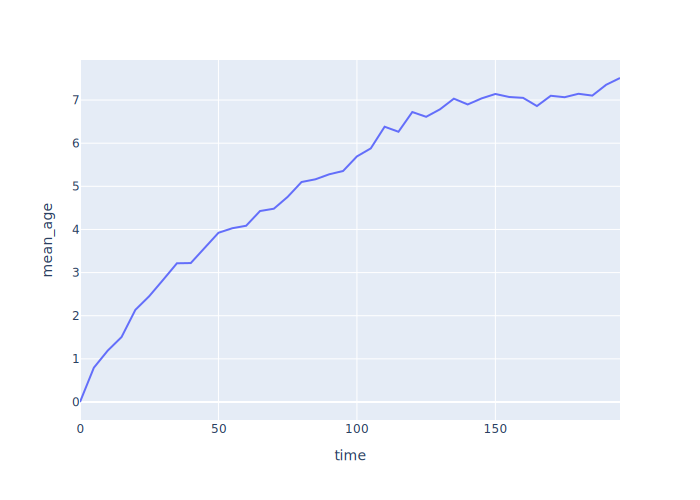
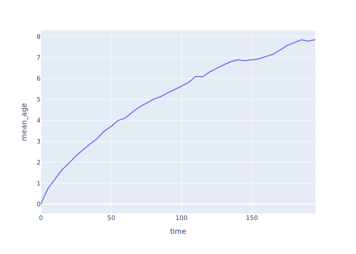
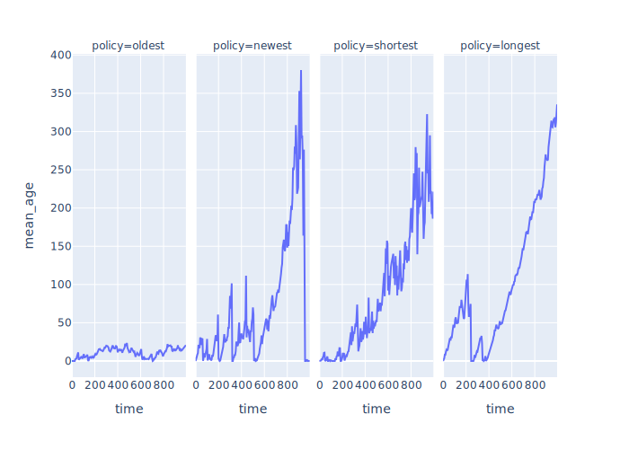
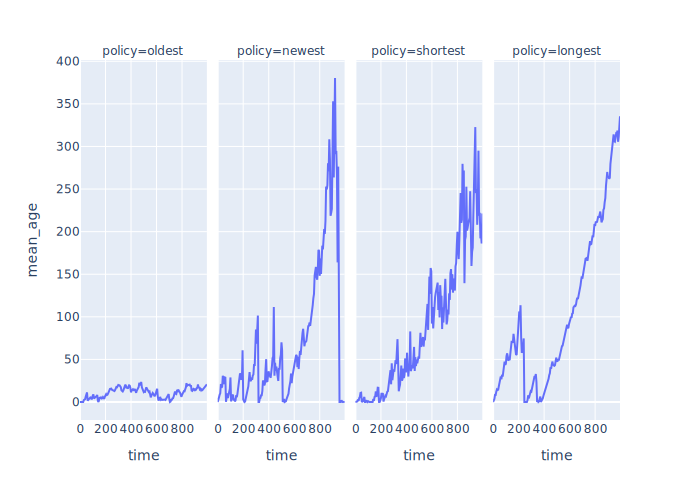

Exploring Scenarios
Terms defined: transition probability
Smoothing Over Multiple Runs
- We have been showing results from individual runs
- What do results look like when averaged over many runs?
- Plot job ages vs. time averaged over 1, 10, 100, and 1000 simulations
 Figure 1: Ages From 1 Run
Figure 1: Ages From 1 Run
 Figure 2: Ages Smoothed Over 10 Runs
Figure 2: Ages Smoothed Over 10 Runs

Figure 3: Ages Smoothed Over 100 Runs

Figure 4: Ages Smoothed Over 1000 Runs
- Work is piling up
- Toward an asymptote or just slowing down?
- We only get to experience one curve in real life
Choosing Jobs
- Four policies:
- Oldest job first (same as regular queue)
- Newest job first
- Longest job first
- Shortest job first
- Implement by:
- Replacing
Store with PriorityStore
- Adding
__lt__ to Job for comparison
- Actual comparison depends on policy
class Params:
# …as before…
policy: str = "shortest"
class Job(Recorder):
# …as before…
def __lt__(self, other):
match self.sim.params.policy:
case "oldest":
return self.t_create < other.t_create
case "newest":
return other.t_create < self.t_create
case "shortest":
return self.duration < other.duration
case "longest":
return other.duration < self.duration
case _:
assert False, f"unknown policy {self.sim.params.policy}"
- Look at effect on backlog over time
 Figure 5: Job backlog vs. time

Figure 6: Age of jobs in queue vs. time
Figure 5: Job backlog vs. time

Figure 6: Age of jobs in queue vs. time
Table 1: Throughput
| policy |
t_sim |
num_jobs |
throughput |
| longest |
1000 |
485 |
0.48 |
| newest |
1000 |
457 |
0.46 |
| oldest |
1000 |
497 |
0.5 |
| shortest |
1000 |
509 |
0.51 |
Table 2: Utilization
| policy |
t_sim |
total_work |
utilization |
| oldest |
1000 |
934.48 |
0.93 |
| shortest |
1000 |
961.69 |
0.96 |
| newest |
1000 |
888.03 |
0.89 |
| longest |
1000 |
974.04 |
0.97 |
Multiple Workers Redoing Work
- Our models so far have assumed that when a job is done, it's done
- In real life, testing often reveals bugs that need rework
- Start by modeling with a second queue and a group of testers
class Params:
# …as before…
n_tester: int = 1
p_rework: float = 0.5
class Simulation(Environment):
def __init__(self):
# …as before…
self.test_queue = None
def simulate(self):
# …as before…
self.test_queue = Store(self)
for _ in range(self.params.n_tester):
self.process(Tester(self).run())
class Tester(Recorder):
def __init__(self, sim):
super().__init__(sim)
self.t_work = 0
def run(self):
while True:
job = yield self.sim.test_queue.get()
yield self.sim.timeout(job.duration)
if self.sim.rand_rework():
yield self.sim.code_queue.put(job)
else:
job.t_complete = self.sim.now
- Any tester can test any job
- All jobs needing rework go back in the same queue as new work
- And are handled in arrival order, i.e., not given priority
- But this isn't realistic
- Give each
Coder its own queue
class Coder(Recorder):
def __init__(self, sim):
# …as before…
self.queue = Store(self.sim)
- Have testers give work back to the coder who did the work
- Need to add a
coder_id field to jobs to keep track of this
class Tester(Recorder):
def run(self):
while True:
job = yield self.sim.test_queue.get()
assert job.coder_id is not None
yield self.sim.timeout(job.duration)
if self.sim.rand_rework():
yield self.sim.coders[job.coder_id].queue.put(job)
else:
job.t_complete = self.sim.now
- Now the hard part: coders selecting jobs
- Put it in a method of its own
- And use
yield from to yield its results back to SimPy
class Coder(Recorder):
def run(self):
while True:
job = yield from self.get()
yield self.sim.timeout(job.duration)
yield self.sim.test_queue.put(job)
- So how does
Coder.get(…) work?
- Create but do not immediately
yield a request for an item from each queue
yield the combination of those items using | (a short form for simpy.AnyOf)result is dictionary-like object whose keys are the requests
and whose values are the items that we got- If we got something from our own queue, take that
- If not, take what we got from the shared queue
- Important: we have to cancel the other request or we can't make another one from that queue
- Yes, this took a while to figure out
- And yes, it's safe to cancel a request that wasn't satisfied
def get(self):
new_req = self.sim.code_queue.get()
rework_req = self.queue.get()
result = yield (new_req | rework_req)
if (len(result.events) == 2) or (rework_req in result):
new_req.cancel()
job = result[rework_req]
assert job.coder_id == self.id
else:
rework_req.cancel()
job = result[new_req]
assert job.coder_id is None
job.coder_id = self.id
return job
- We can now build a graph showing the transition probabilities
for each state that a job might be in
- Introduce a state
incomplete for jobs that aren't finished by the end of the simulation
 Figure 7: Transition Probability Graph
Figure 7: Transition Probability Graph